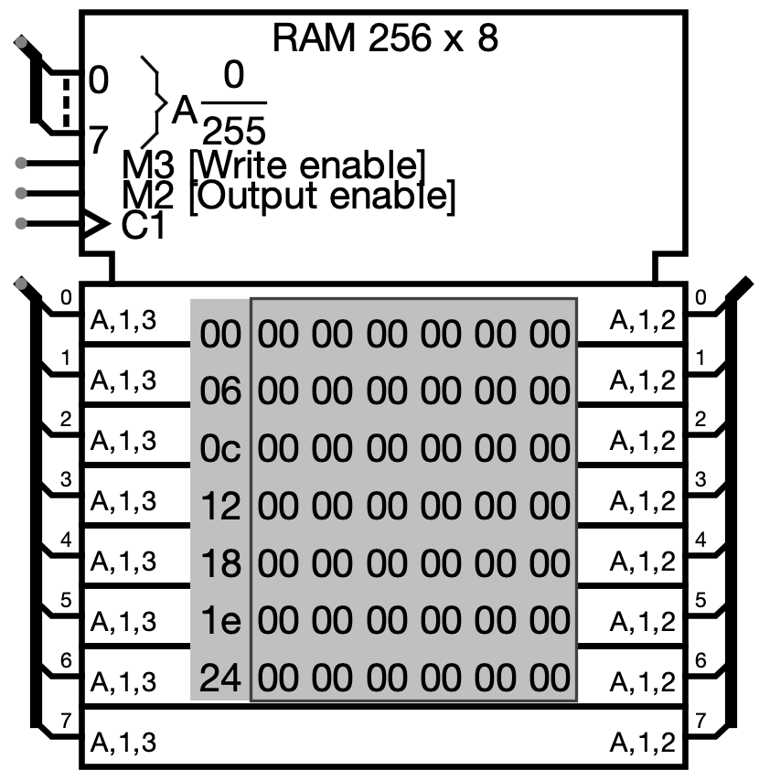

RAM
| 库: | 存储 |
| 介绍: | 2.0 Beta 1 |
| 外观符号: |  |
行为
RAM 组件无疑是 Logisim-evolution 内置库中最复杂的组件，最多可存储 16,777,216 个值（在“地址位宽”属性中指定），每个值最多可包含 32 位（在“数据位宽”属性中指定） 。 该电路可以在 RAM 中加载和存储值。 此外，用户可以通过 Poke 工具交互地修改单个值，或者用户可以通过菜单工具修改整个内容。
当前值显示在元件中。 显示的地址以灰色列出在显示区域的左侧。 在内部，每个值都使用十六进制列出。 当前所选地址处的值将以反色文本（黑底白字）显示。
RAM 组件支持三种不同的接口，具体取决于数据接口属性。
- 1个同步加载/存储端口（默认）
-
该组件在其东侧有一个端口，用于加载和存储数据。 它执行的操作取决于标记为ld的输入：1（或浮动）表示将数据加载到组件西侧指定的地址，0表示存储端口上给定的数据。 要将数据传入和传出组件，您将需要使用受控缓冲区组件，如下所示。

- 1个异步加载/存储端口
-
这与上面相同，只是没有时钟。 只要 ld 输入为 0，数据总线上找到的值就会存储到内存中。如果在 ld 输入为 0 时，地址或数据发生变化，则附加一个 发生存储。 此选项旨在更接近许多可用随机存取存储器的接口。
- 独立的装载和存储端口
-
提供两个数据端口，一个在西侧用于存储数据，另一个在东侧用于加载数据。 此选项消除了处理受控缓冲区的必要性，因此更易于使用。
-
引脚
- A 在西边（输入，位宽与地址位宽属性匹配）
- 选择电路当前正在访问存储器中的哪个值。
- D 在西边（输入，位宽与数据位宽属性匹配）
- 仅当为数据接口属性选择“单独的加载和存储端口”时，才会出现此输入。 当请求存储时（通过时钟从 0 变为 1，而 sel 和 str 均为 1 或浮动），在此端口找到的值将存储到内存中 当前选择的地址。
- D on east edge (input/output or output, bit width matches Data Bit Width attribute)
- 如果sel和ld为1或浮动，则RAM组件发出在此端口上当前选定地址处找到的值。 如果只有一个加载/存储端口，则每当请求存储时，都会存储从此端口读取的值。
- str 位于南边缘（输入，位宽 1）
- 存储：仅当为数据接口属性选择“单独的加载和存储端口”时，此输入才会出现。 当它为 1 或浮动时，时钟脉冲将导致将在西边沿找到的数据存储到内存中（假设 sel 输入也是 1 或浮动）。
- sel 位于南边缘（输入，位宽 1）
- 芯片选择：该输入根据值是 1/浮点还是 0 来启用或禁用整个 RAM 模块。该输入主要用于具有多个 RAM 单元的情况，但任何时候只能启用其中一个。
- 南边三角形（输入，位宽 1）
- 时钟输入：当数据接口属性的值为“一个异步加载/存储端口”时，时钟输入不存在。 在其他情况下，当ld为0时，该输入从0上升到1（并且sel为1/undefined且clr为0） ，则当前选定地址处的值将更改为 D 引脚处的任何值。 不过，只要时钟输入保持 0 或 1，D 值就不会存储到内存中。
- ld 位于南边缘（输入，位宽 1）
- 加载：选择 RAM 是否应发出（在 D 上）当前地址 (A) 处的值。 如果 out 为 1 或未定义，则启用此输出行为； 如果 out 为 0，则不会将任何值推送到 D - 但如果存在组合的加载/存储端口，则将启用存储。
- clr 位于南边缘（输入，位宽 1）
- 清除：当该值为 1 时，无论其他输入是什么，内存中的所有值都固定为 0。
属性
当选择或添加组件时，数字“0”到“9”会更改其
地址位宽度
属性，而Alt-0到Alt-9会更改其数据位宽度
属性 > 属性。- 地址位宽
- 地址位的位宽。 RAM 中存储的值数量为 2addrBitWidth。
- 数据位宽
- 内存中每个单独值的位宽度。
- 数据接口
- 配置三个接口中的哪一个用于将数据传入和传出组件。
Poke 工具行为
请参阅用户指南中的挖掘内存。
文本工具行为
无
菜单工具行为
请参阅用户指南中的弹出菜单和文件。
返回 电路元件库参考手册